第9章
基本文本处理
无论是在UNIX中，还是在Linux中，文本的处理都非常重要。在Linux中，所有的一切都是文件，而与普通用户关系最密切的，就是文本文件。同时，文本处理也成为Shell程序设计中很重要的一部分，Linux系统中许多程序的相互协作都是通过文本文件来实现的。本章将介绍如何在Shell程序中对文本进行处理。
本章主要涉及的知识点如下所述。
- 使用echo命令输出文本：主要介绍echo命令的基本语法、显示普通字符串、转义字符、变量、命令执行结果等各种数据的方法。
- 文本的格式化输出：主要介绍对文本格式化输出的各种方法，包括制表符、fold、fmt，以及pr等命令的使用方法。
- 使用sort命令对文本排序：主要介绍sort命令的基本语法，以及如何根据不同的标准对文本进行排序。
- 文本的统计：主要介绍如何创建行号、统计行数、单词数，以及字符数等。
- 使用cut命令选取特定的文本：主要介绍cut命令的基本语法，以及如何根据不同的要求对文本列进行选择。
- 使用paste命令拼接文本行：主要介绍paste命令的基本语法，以及如何根据用户需求来并行拼接多个文件的列。
- 使用join命令联接文本行：主要介绍joint命令的基本语法，以及使用不同的方法来联接两个文本文件。
- 使用tr命令替换文件内容：主要介绍tr命令的基本语法、如何去除重复出现的字符、删除空行、大小写转换，以及删除指定字符等。
9.1 使用echo命令输出文本
在进行Shell程序设计的过程中，文本的输出非常重要。例如程序为用户提供的提示信息及程序的执行结果等，这些信息都是作为文本输出的。本节将介绍最简单的文本输出命令echo。
9.1.1 显示普通字符串
在本书前面几章的例子中，我们已经接触过echo命令了。echo命令的功能就是输出一行文本。在Shell程序中，多用于显示提示信息或者程序产生的数据。
echo命令的基本语法如下：
在上面的语法中，options表示命令选项。echo命令常用选项比较少，只有一个-n，该选项表示不输出行尾的换行符。在默认情况下，每执行一次echo命令，都会在输出信息的行尾加上一个换行符。参数string表示要输出的文本，用户可以同时指定多个文本，这些文本之间用空格隔开。
【例9-1】演示如何使用echo命令输出用户提示信息，代码如下：
在上面的代码中，每个echo语句都提示用户输入一条信息，然后使用read语句读取用户输入的数据。之所以使用了-n选项，主要是禁止echo语句执行完成之后附加换行符，从而使得光标可以停留在提示信息后面，如图9-1所示。
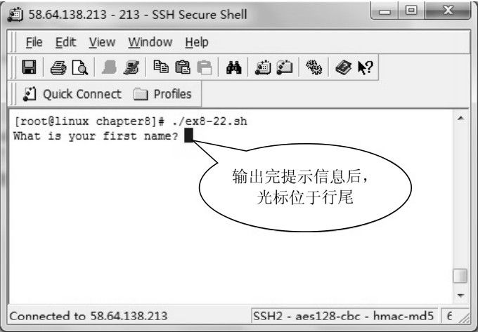
图9-1 使用-n选项禁止附加换行符
该程序的执行结果如下：
在使用echo命令输出文本时，如果要输出的文本是由多个单词组成的，用户可以使用双引号或者单引号将其引起来。当然，如果不使用引号引起来的话，在绝大部分情况下，也不会影响输出的结果，只是此时echo命令将一个字符串根据空格分割成多个字符串输出了。例如下面两条命令的执行结果并没有不同之处：
9.1.2 显示转义字符
除了支持普通文本的输出之外，echo命令还支持简单的转义字符的输出。通过转义字符，echo命令可以控制输出的格式，或者是输出某些特殊的字符，例如退格符、换页符，以及制表符等。表9-1列出了echo命令支持的转义字符。如果要使echo命令支持转义字符，还必须使用-e选项。
表9-1 echo命令的转义字符
| 字 符 | 说 明 |
| \a | 报警符，相当于ASCII码的BEL字符 |
| \b | 退格符 |
| \c | 禁止继续输出文本 |
| \f | 换页符 |
| \n | 换行符 |
| \r | 回车符 |
| \t | 水平制表符 |
| \v | 垂直制表符 |
| \\ | 反斜线 |
在表9-1列出的转义字符中，\c字符使echo停止继续输出该字符后面的文本，包括最后的换行符。
【例9-2】演示各种转义字符的使用方法，代码如下：
在上面的代码中，第5行使用了退格符，该字符会使光标从当前位置向左后退一个字符，然后继续输出文本。因此，该字符会导致前面的一个字符被覆盖。第7行使用了\c字符，该字符会导致echo语句忽略hello后面的文本。第9行使用了换行符\n，该字符会使光标跳到下一行的开始位置。第11～13行使用制表符输出了一个简单的表格，该字符会使后面的内容在垂直方向上对齐。
该程序的执行结果如下：
在上面的输出结果中，第1行代码中的字符a消失了，这是因为使用了退格符，从而导致字符a被后面的空格覆盖。第2行有2个hello，其中第1个hello是代码第7行的echo语句的输出结果。由于字符\c会使echo语句忽略后面的内容，包括换行符，所以代码第9行的echo语句并没有转到下一行输出。同时，由于代码第9行使用了换行符，所以单词world转到了下一行输出。输出结果的第4～6行是使用制表符输出的简单的表格。
9.1.3 显示变量
用户可以使用echo语句将程序中的变量的值打印出来，在前面的许多例子中，都使用echo语句来输出某些信息。
【例9-3】演示使用echo语句显示变量的方法，代码如下：
在上面的代码中，第4行输出一行提示信息，第6行使用read语句读取用户输入信息，第8行将变量name的值输出。第10～11行分别定义了两个变量，第13行同样输出这两个变量的值。
该程序的执行结果如下：
在上面的执行结果中，可以发现用户输入的文本已经被正常输出。但是，第11～12行代码定义的两个变量却没有正确输出。之所以会得到这样的结果，是因为第13行代码中的变量名与其他字符连接在一起，从而导致Shell搞不清楚变量名到底是由哪些字符组成。而第8行代码中，变量名name与其他的字符并没有连接在一起。为了使Shell能够正确地解析变量名，用户需要使用花括号将变量名括起来。
【例9-4】使用花括号界定变量名，代码如下：
在上面的代码中，第13行使用花括号将变量名v1和v2分别括起来，括号里面的就是变量名。
该程序的执行结果如下：
可以发现，这次得到了正确的结果。
 注意：如果变量名与不能作为变量名的字符，例如-、’及/等连接在一起时，可以不使用花括号。
注意：如果变量名与不能作为变量名的字符，例如-、’及/等连接在一起时，可以不使用花括号。
9.1.4 换行和不换行
在默认情况下，echo命令在输出文本的末尾会自动追加一个换行符，下面的例子就说明了这种情况。
【例9-5】演示echo命令会自动追加换行符，代码如下：
在上面的代码中，第4～5行分别输出一行文本。尽管没有使用换行符，但是，echo语句会自动追加一个换行符。也就是说，第5行的文本会在下面一行输出。
该程序的执行结果如下：
为了能够避免echo语句自动换行，用户可以使用两种方法来解决：首先，用户可以使用echo命令的-n选项，其次，用户还可以使用转义字符\c。-n选项可以使echo命令不输出结尾的换行符；转义字符\c可以使echo命令忽略其后的字符。
【例9-6】演示使用-n选项来使多条echo语句输出到同一行中，代码如下：
该程序的执行结果如下所示。
从上面的输出结果可以得知，使用-n选项之后，第5行的echo语句在结尾并没有输出换行符，所以第6行的echo语句会紧接着在同一行继续输出。
如果使用转义字符\c，可以达到同样的效果。但是，由于\c会忽略该字符后面的所有的文本，所以如果仅仅解决换行问题，应该将转义字符\c放在文本的最后。
【例9-7】演示如何使用\c来避免换行，代码如下：
在第5行中，为了使得echo命令支持转义字符，需要使用-e选项。该程序的执行结果与【例9-6】完全相同，如下所示。
9.1.5 显示命令执行结果
除了显示文本之外，echo命令还可以将Shell命令执行结果显示出来。不过，在显示命令执行结果的时候，需要使用反引号将命令引用起来，其语法如下：
【例9-8】演示如何使用echo命令显示命令的执行结果，代码如下：
该程序的执行结果如下：
9.1.6 echo命令执行结果的重定向
关于重定向的详细介绍，请参考本书的第12章。简单地讲，重定向就是将Shell命令的标准输出重新定向到一个文件。在默认情况下，echo命令的标准输出设备为显示器。但是，在某些情况下，用户可能不需要将echo命令显示的信息输出到屏幕，而是需要将其保存到一个磁盘文件中，此时，用户就需要使用重定向。
重定向的操作符为>或者>>，在目标文件已经存在的情况下，前者会覆盖目标文件原有的内容，而后者则会将数据追加到原来文件的末尾。
将echo命令的执行结果重定向的语法比较简单，直接将重定向操作符放在echo语句的结尾，然后再指定一个文件名即可。
【例9-9】演示将echo命令执行结果重定向的方法，代码如下：
在上面的代码中，第5行语句是将字符串Hello, world.写入hello.txt文件，并且会覆盖原有文件的内容，如果hello.txt文件已经存在的话。第7行是将字符串Hello, Chunxiao追加到hello.txt文件的末尾。
该程序的执行结果如下：
从上面的执行结果可以得知，第5行和第7行语句中的字符串已经被写入hello.txt文件中，并且第7行的echo语句并没有覆盖原来的内容。
9.2 文本的格式化输出
尽管echo命令语句提供了最基本的输出功能，但是在某些场合，用户可能需要对文本的输出格式进行更加细致地控制。在Shell程序中，文本的格式化输出主要有制表符、pr命令，以及fmt命令等。本节将介绍这几个命令的使用方法。
9.2.1 使用UNIX制表符
制表符的功能是在不使用表格的情况下，在垂直方向上按列对齐文本。对于输出某些简单的表格，例如名单及简单列表使用制表符是非常方便快捷的。尤其是在字符界面下输出表格，使用制表符可以达到事半功倍的效果。
在Shell中，制表符通常使用转义字符\t表示，其中字母t表示Tab，即表格的英文单词Table的前3个字母。前面已经讲过，echo命令支持制表符的输出。但是为了使用转义字符，需要使用-n选项。
【例9-10】演示使用echo命令结合制表符来输出九九乘法表，代码如下：
关于for循环语句的使用方法，前面已经详细介绍过了。在本例中，使用双层for循环结构，依次以表格的形式输出两个循环中的循环变量的乘积。在第10行中，echo语句用来输出数据，最后附加了一个制表符，是为了纵向对齐每列。第13行的echo语句的作用是当内层循环每次结束之后，打印一个换行符。
该程序的执行结果如下：
注意：在不同的场合，制表符的大小可能会有所不同。但是，在通常情况下，制表符默认为4个或者5个空格。
9.2.2 使用fold命令格式化行
顾名思义，fold命令的功能是将超过指定宽度的文本行进行折叠处理，使得超过指定宽度的字符转到下一行输出。fold命令的基本语法如下：
在上面的语法中，options表示选项，fold命令常用的选项有如下所列。
- -b：按字节计算宽度。默认情况下，fold命令按列来计算宽度。
- -s：在空格处折断行。
- -w：指定宽度，默认值是80列。
file参数用来指定要输出的文件名，可以是多个文件，文件名之间用空格隔开。
【例9-11】演示使用fold命令格式化输出文本的方法。首先准备一个文本文件，其内容如下所示。
然后使用fold命令来格式化输出该文件的内容，命令如下：
以上命令的执行结果如图9-2所示。
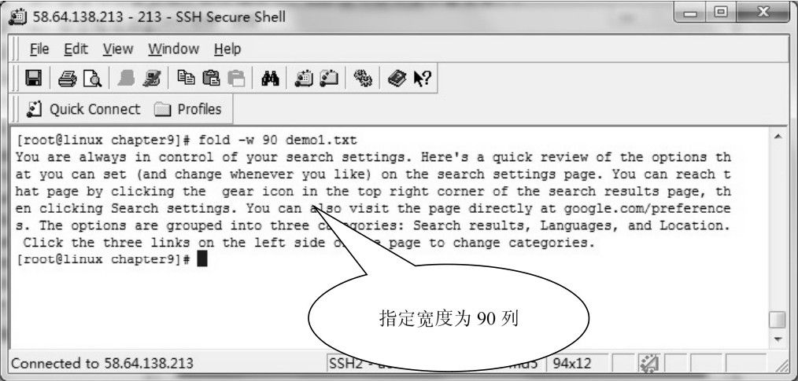
图9-2 指定输出宽度
从图9-2可以看出，指定了宽度之后，当文本行的宽度达到指定列数之后，便立即换行，即使是一个单词，也被截断。因此，从外观上看，整个文本非常整齐。但是，由于换行处的单词被截断了，所以这并不符合用户的习惯。
对于以空格作为单词分隔符的语言来说，用户可以使用-s选项，使fold命令在空格处将行折断，从而保持了单词的完整。也就是说，当fold命令输出到指定列数之后，发现输出的一个单词还没有输出完，此时，fold命令会在当前行继续输出完还没有输出完的单词，然后到下一行继续输出。
【例9-12】通过-s选项使文本行在换行时保留单词的完整，同样指定文本行的宽度为90列，命令如下：
以上命令的执行结果如图9-3所示。
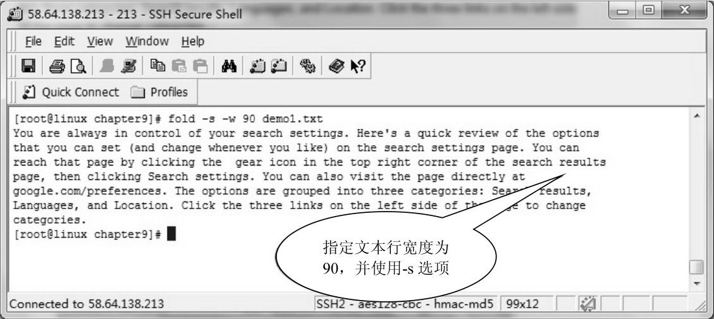
图9-3 指定宽度和空格处换行
比较图9-2和图9-3，可以发现在图9-3中，所有的行尾的单词都是完整的。尽管在图9-3中，所输出的文本并没有图9-2的整齐，但是它更符合用户的习惯。
注意：fold命令的-w选项会使文本行被生硬地截断，并不判断单词的完整性，因此在使用时一定要注意。
通常情况下，用户使用fold命令的目的仅仅是输出到屏幕或者打印机等设备上面。如果想要将格式化的结果保存下来，可以使用重定向操作符将输出重定向到磁盘文件。
【例9-13】通过重定向将fold命令的输出结果保存到文件，命令如下：
上面的命令将格式化的结果保存到formtedtext.txt文件中。当命令执行完成之后，用户可以使用cat或者more等命令来查看文件的内容，命令如下：
以上命令的执行结果如图9-4所示。
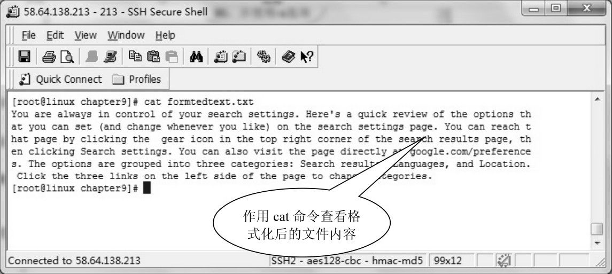
图9-4 使用cat命令查看格式化输出生成的文本文件
从图9-4中可以看到，formatedtext.txt文件完整地保存了fold命令的格式化结果。
9.2.3 使用fmt命令格式化段落
与fold命令相比，fmt命令提供了更多的功能。fmt命令是Shell中的一个简单的文本格式化工具，其名称来自于格式化（format）的缩写。fmt命令的基本语法如下：
其中，-width选项用来指定文本行的列数，默认为75列，即每行显示75个字符。option表示各种命令选项，常用的选项如下所列。
- -c：保留每个段落的前两行的缩进，该段落剩余的行的左边距与第2行相同。
- -t：该选的功能与-c选项基本相同，但是在使用-t选项时，每个段落的第1行和第2行的缩进必须是不相同的，否则第1行将被看做一个单独的段落。
- -s：只折断超出指定宽度的行，不合并少于指定宽度的行。
- -u：统一空格的个数，单词之间保留1个空格，句子之间保留2个空格。
- -w：指定每个行的最大宽度，默认值为75列。
file参数为要格式化其内容的文件名，可以同时指定多个文件，文件名之间用空格隔开。如果指定文件名为-，则fmt命令会从标准输入，即键盘读取文本。
为了演示fmt命令的使用方法，用户需要首先创建一个文本文件，其内容如下：
【例9-14】演示使用-w选项来指定行的最大长度为80列，代码如下：
在上面的代码中，第5行使用-c选项来指定文本行的最大长度为80列。
以上代码的执行结果如图9-5所示。
从图9-5可以得知，使用-w选项指定了文本行的最大长度为80列之后，fmt命令输出文本超过80个字符便会自动换行。如果达到80个字符时fmt命令发现没有显示完的单词，便将该单词移至下一行显示。
使用-c选项之后，每个文本的每个段落前面两行的缩进格式被保留下来，同时，该段落从第3行开始，其缩进格式与第2行相同。
如果不想fmt命令将不足指定行长度的行合并，则可以使用-s选项。
【例9-15】本例对【例9-14】进行改进，加上-s选项，以避免合并行，代码如下：
以上代码的执行结果如图9-6所示。
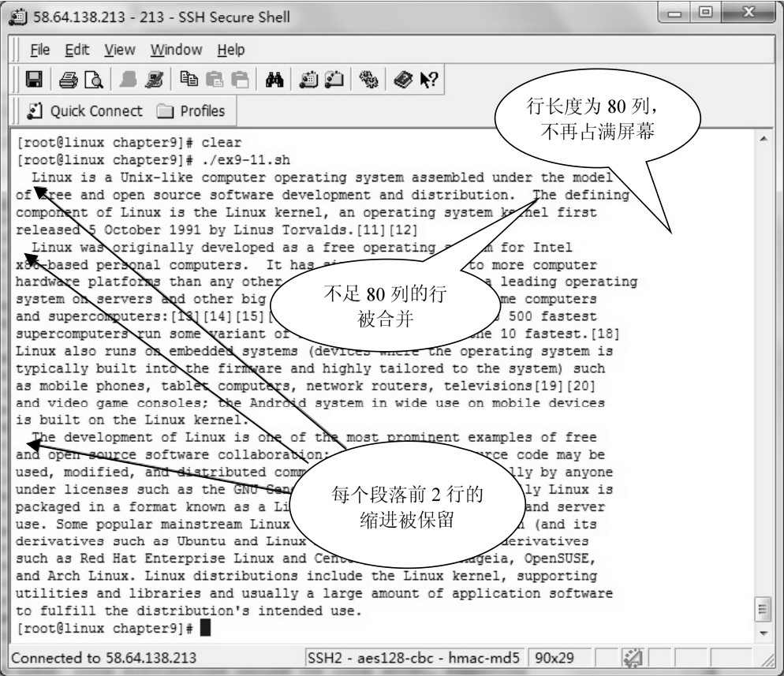
图9-5 指定行宽和缩进
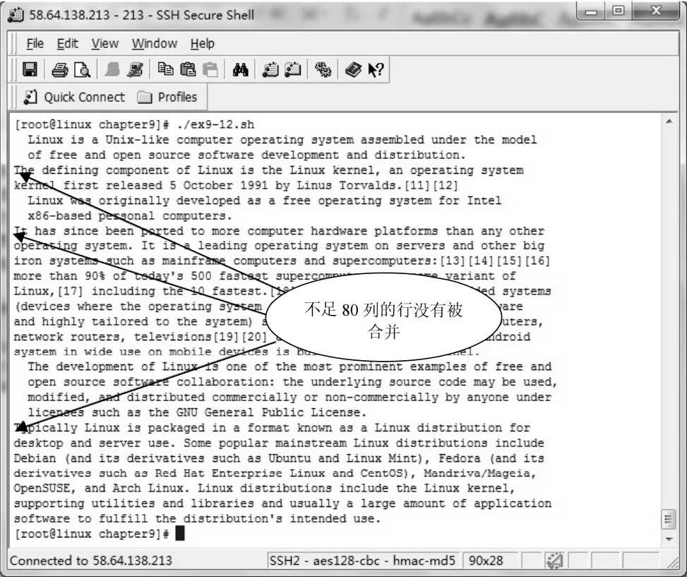
图9-6 不合并不足指定行宽的行
对比图9-5和图9-6，可以发现，在图9-6中，The defining component…、It has since…，以及Typically Linux is…这3行并没有被合并到上面的一行中。
关于fmt命令的其他选项不再举例说明，用户可以自己去尝试操作。与fold命令一样，用户也可以通过输出重定向将fmt命令格式化结果输出到文件中。这个操作与fold基本相同，请读者参考fold命令的使用方法进行练习，不再详细说明。
注意：fmt命令的着重点在于文本的段落。另外，fmt命令的-w选项和fold命令的-w选项的功能并不相同。前者会考虑单词的完整性，而后者则是直接将单词截断。
9.2.4 使用rev命令反转字符顺序
rev命令的功能是用来反转文件中的文本行的字符顺序，其名称来自于reverse（反转）的前3个字母。rev命令的基本语法如下：
其中，file表示要处理的文件的文件名列表，如果是多个文件，则文件名之间用空格隔开。
假设存在一个名称为demo3.txt的文本文件，其内容如下：
【例9-16】演示rev命令的使用方法，代码如下：
该例的执行结果如下：
从上面的执行结果可以得知，demo3.txt文件中的2行文本的字符都被逐个反转顺序。
9.2.5 使用pr命令格式化文本页
pr命令是一个非常有用的工具，其功能主要是将文本文件的内容转换成适合打印的格式。pr命令的名称来自于print（打印）的前两个字母，其基本语法如下：
其中，option表示命令选项，常用的选项如下所列。
- -column：指定输出的栏数，默认值为1。
- -a：修改-column的显示效果，水平创建栏，与-column选项配合使用。
- -d：产生两个空格的输出。
- -F或者-f：使用换页符代替换行符实现分页。
- -h：指定页眉，如果没有指定，则默认使用文件名作为页眉。
- -l：指定每页的行数，默认为66行。
- -o：指定每行的缩进的字符数量。
- -w：指定页面宽度，默认为72个字符。
在使用-column等选项时，一定要注意指定的不能超过页面的宽度。默认情况下，pr命令的分栏是垂直划分的，也就是说，文件的前面几行会作为第1栏的内容，接下来的几行会作为第2栏的内容，依此类推。但是用户可以使用-a选项来改变这种显示的效果，使得水平划分栏。也就是说，文件的第1行作为第1栏的第1行，第2行作为第2栏的第1行，依此类推。当所有栏的第1行都输出之后，再重新回到第1栏输出第2行。
为了演示pr命令的使用方法，首先准备一个文件，其内容如下：
在上面的文件中，包含一个国家名称的列表。为了打印输出，用户需要使用pr命令来对该文件进行格式化处理。
【例9-17】演示使用pr命令将该文件的内容进行格式化处理，代码如下：
其中，第5行将demo4.txt的内容分成4栏输出。页面宽度为默认值，即72个字符。
该例的执行结果如图9-7所示。
在图9-7中可以看到，pr命令生成了一个可以输出到打印机的基本的页面，包括打印日期、页眉及页码。同时，将内容分成指定的栏来输出。如果文本的行数不够一个完整的页面的高度，则使用换行符来填充。
【例9-18】演示如何自定义页眉、文本水平分栏，以及使用换页符来代替换行符，代码如下：
该例的执行结果如图9-8所示。
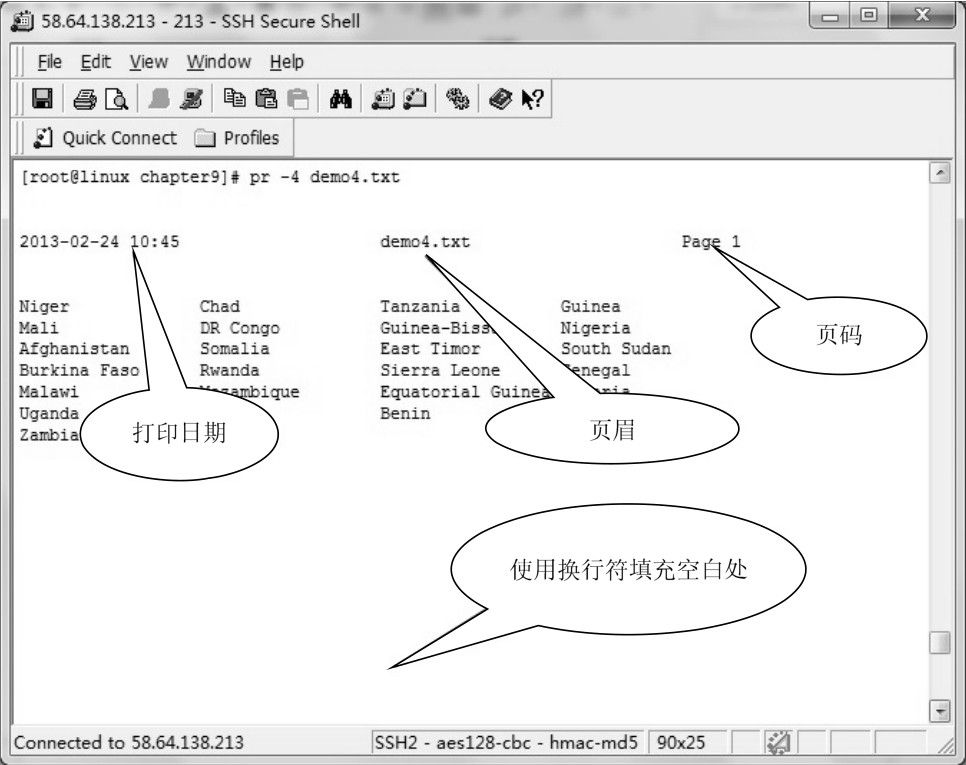
图9-7 格式化文本页
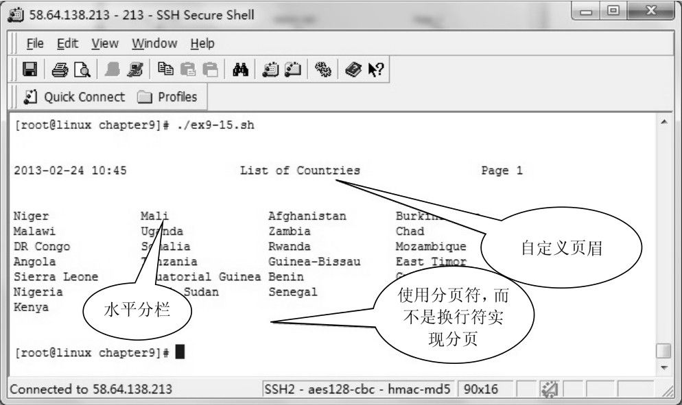
图9-8 自定义页眉，水平分栏
除了以上常用选项之外，如果用户不想显示标题，则可以使用-t选项，命令如下：
以上命令的执行结果如图9-9所示。
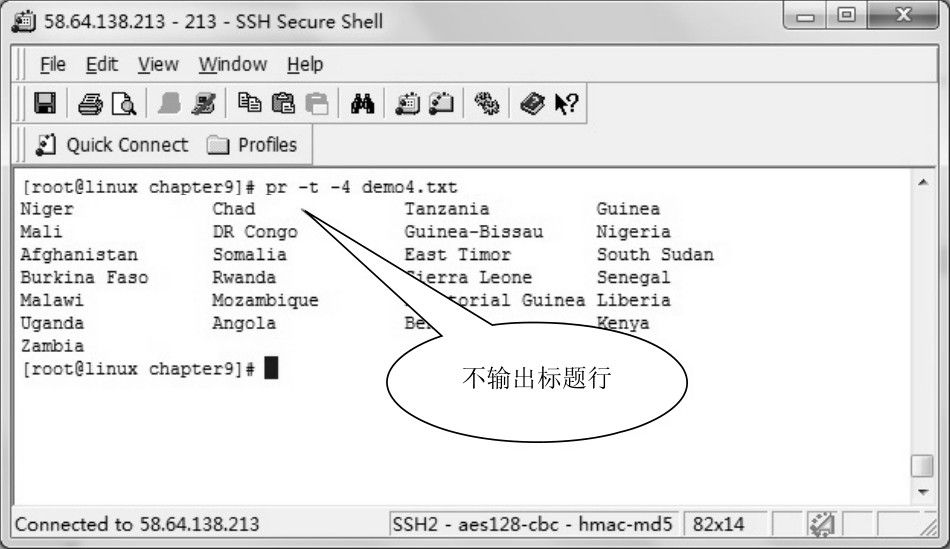
图9-9 省略标题栏
如果想要将格式化的结果保存到文件中，同样可以使用输出重定向操作符，如下所示。
注意：与fold和fmt命令不同，pr命令主要是为打印输出设置页面。
9.3 使用sort命令对文本排序
在Linux或者UNIX中，许多数据都是以文本文件的形式存在。因此，用户经常需要对这些文本进行排序，为此，Shell提供了sort命令来完成这个任务。本节将介绍sort命令的使用方法。
9.3.1 sort命令的基本用法
Shell中的sort命令有3种执行模式，分别为排序文本、检查文件是否已经排序以及合并文件。在本节当中，对这3种执行模式将依次详细介绍。在本节中，首先介绍最基本的排序功能。
sort命令的基本语法如下：
在上面的语法中，option表示sort命令的选项，常用的选项如下所列。
- -b：忽略前导空格或者制表符，找出第一个非空格字符。
- -c：测试文件是否已经排序。
- -d：根据字典顺序排序。该选项仅比较数字、字母和空格等字符。
- -f：忽略大小写。将小写字母转成大写字母后参与比较。
- -i：仅仅比较可打印字符。
- -n：根据算术值进行比较，参与比较的字符有空格、十进制数字，以及减号等。如果对非数值字符进行算术值比较，将会产生无法预知的结果。
- -R：根据哈希值随机排序。
- -r：颠倒排序结果。
- -k：定义排序关键字。
- -m：仅仅合并已经排好序的文件，不执行排序操作。
- -o：将排序结果写入文件，而不是标准输出设备。
- -t：指定字段分隔符。默认值为空格。
- -u：删除重复的行，只保留第一个。
file参数是要排序的文件列表，多个文件名之间用空格隔开。如果使用符号-作为文件名，则从标准输入读取数据。
尽管sort命令的语法相对比较简单，没有非常多的令人眼花缭乱的选项参数，但是， sort命令的功能非常强大，完全可以满足用户对于简单数据的管理。
为了学习sort命令的使用方法，用户需要首先准备一个文本文件，其名称为demo5.txt，内容如下：
上面文件的内容共分4列，第1列为商场名称，第2列为供货区代码，第3列为本季度租金金额，第4列为本年度租金金额。这些列之间使用制表符隔开。
最简单的sort命令的用法就是不使用任何选项。如果不指定任何选项，则sort命令会将整个文本行作为一个关键字来排序。
【例9-19】演示使用最简单的sort命令对demo5.txt文件进行排序，代码如下：
该例的执行结果如下：
对比demo5.txt文件的内容，可以发现使用sort命令之后，文件的内容已经处于有序状态了。如果不提供任何关键字，则sort会将整个文本行作为关键字进行排序，其排序规则是首先比较第1列，如果第1列的值相同，则比较第2列，依此类推，直至比较完所有的列。如果所有的列都相同，则判定这些行是重复的行。
注意：sort命令处理数据是以行为单位进行的，与关系型数据库中的表非常相似。
9.3.2 使用单个关键字排序
前面讲过，如果不指定任何选项，则sort命令会根据整个文本行进行排序，文本行中的所有的列都会参与排序。但是，在某些情况下，用户可能不需要所有的列都进行比较，而只是根据其中的某几个列进行排序。对于这种情况，用户可以使用-k选项来定义排序关键字，其基本语法如下：
其中，pos1表示排序关键字的起始位置，pos2表示排序关键字的结束位置，这两者之间用逗号隔开。通常情况下，组成排序关键字都是以列为单位的。此时，post1和pos2就是关键字的起始列和结束列的列号。列号从1开始，即第1列为1，第2列为2，依此类推。
注意：sort命令中，一个文本行最多只能包括10列。
在通过关键字排序的时候，sort命令首先会根据关键字中的第1个列排序，如果关键字的第1个列相同，则会根据关键字中的第2个列排序，依此类推。
【例9-20】演示使用2个列作为一个关键字来进行排序的方法，代码如下：
在上面的代码中，第5行使用-k选项定义了一个关键字，包括第2列和第3列，程序会首先根据第2列进行排序，在第2列相同的情况下，再根据第3列排序。
该例的执行结果如下：
观察上面的排序结果，可以发现第3列中的63比同列中其他各个值都小，但是却排到了最后，这是因为在默认情况下，sort命令会将列的值作为字符串来排序。而“63”中的第1个字符“6”的ASCII码比其余的值的第1个字符的ASCII码值都大，所以排到了最后。通常情况下，这种排序方法并不符合用户的要求，关于如何解决这个问题，将在随后的内容中介绍。
在理解了排序关键字的定义方法之后，接下来再介绍几种特殊的情况。一般情况下，排序关键字是由起始列和终止列定义的，但是在某些情况下，用户可能会省略终止列，只保留起始列，那么其语法就变成以下形式：
以上语法也是一种合法的语法，它表示从pos参数指定的列开始，一直到文本行的结尾都是排序关键字。这意味着，sort在排序的时候，会从pos指定的列开始，一直比较到行尾。
注意：关键字-k pos并不表示根据第pos个列排序，而是根据从第pos列开始一直到行尾的所有列排序，初学者往往在这个问题上犯错误。
为了能够观察到sort命令排序的过程，新创建一个文本文件，其名称为demo6.txt，内容与demo5.txt基本相同，除了第3列中有两个相同的值之外，如下所示：
【例9-21】演示只指定sort命令排序关键字的起始列的情况，代码如下：
在上面的代码中，第4行判断用户输入的列号是否超过文件中的列的数量。如果超过了文本文件中列的实际列数，则给用户相关的提示。第11行使用位置变量获取用户指定的列号，并且将demo6.txt文件排序。
该程序的执行结果如下：
分析上面的排序结果，可以发现，【例9-21】首先会根据第2列来排序，当第2列相同时，再根据第3列排序，当第3列相同时，再根据第4列排序。由于第4列中，“2192”的第1个字符“2”的ASCII码值小于“3972”的第1个字符“3”的ASCII码值，所以“2192”排在“3972”前面。如图9-10所示，描述了sort命令的排序过程。
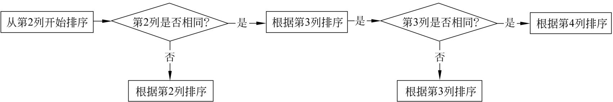
图9-10 sort命令的排序过程
除了只指定起始列之外，还有可能存在其他两种特殊的情况，即起始列的列号大于终止列的列号和起始列的列号等于终止列的列号。当用户指定的起始列的列号大于终止列的列号时，该关键字将不发挥任何作用。但是，如果起始列的列号等于终止列的列号，却是一种比较常见的情况，关于这种情况，将在接下来的内容中介绍。
注意：用户不能只提供终止列号，不提供起始列号，这是语法上面的错误。
在上面的例子中，所有的关键字都是由一个个完整的列组成的。实际上，在某些情况下，用户还需要仅仅将列中的一个子串作为排序关键字的组成部分。例如，Linux系统中的绝大部分软件的日志文件都是由空格分隔的许多列组成的文本文件，如下所示。
在上面的文件中，第4列是访问日期，其中第14、15个字符为访问时间中的小时，如果用户需要根据这个小时来排序，那么将整个列作为关键字的一部分参与排序就无法实现了。
为了处理这种情况，-k选项中的起始列可以指定开始的字符，而终止列可以指定结束字符，其语法如下：
在上面的语法中，pos1同样表示起始列的列号，小数点后面的start表示起始列中开始的字符位置。pos2同样表示终止列的列号，小数点后面的end表示终止列中结束的字符位置。也就是说，从pos1列的第start个字符开始，一直到第pos2列的第end个字符结束，都是排序关键字的组成部分。
在上面的语法中，列号和字符位置编号都从1开始。如果省略了start，则表示从第1个字符开始；如果省略了end，则表示到最后一个字符结束。
【例9-22】演示使用某个列的子串作为关键字的组成部分的方法，代码如下：
在上面的代码中，第5行中的-t选项用来指定列分隔符为空格，关于该选项的使用方法将在后面介绍。-n选项表示将关键字作为数值来排序，该选项的用法也将随后介绍。-k 4.14, 4.15表示从第4列的第14个字符开始，到第4列的第15个字符结束，中间的子串作为排序关键字。最后，通过输出重定向操作符将排序结果输出到文件。
该程序的执行结果如下：
9.3.3 根据指定的列排序
一般情况下，sort命令都是使用几个列组成一个关键字来排序的。如果用户只想根据某一个列排序的话，同样也可以通过-k选项来实现。实际上这是一种特殊的情况，即起始列的列号和终止列的列号相同。因此，根据某个指定的列排序的语法如下：
其中，pos表示要排序的列的列号。同样，列号也是从1开始编号。如果只想根据某个列中的子串来排序，可以指定起始字符和终止字符，语法如下：
【例9-23】演示根据用户输入的列号来对文件进行排序的方法，代码如下：
在上面的代码中，第11行使用位置变量$1来获取用户输入的列号，并且将该列号作为起始列号和终止列号。
该程序的执行结果如下：
9.3.4 根据关键字降序排序
在前面所有的例子中，都是根据关键字的升序排列。sort命令还提供了-r选项和r修饰符，用来实现根据关键字降序排列。其中-r选项是作为全局选项使用，其作用对象为sort命令中所有没有附件修饰符的列。修饰符r可以附加在组成关键字的列号后面，其作用域为所附加的列。
【例9-24】使用-r选项对文本进行降序排序，代码如下：
在上面的代码中，-r选项将作用于第2列和第3列。sort命令会首先根据第2列降序排序，然后再根据第3列降序排序。
该程序的执行结果如下：
从上面的例子可以得知，使用-r选项会同时作用于所有的关键字。当用户只需要根据某个关键字降序排列，而其他的关键字升序排序时，使用-r选项就很难实现，因此给用户带来了一些不方便。
与全局选项-r相比，修饰符r就显得更加灵活。它附加在关键字的后面，其作用域仅限于所附加的关键字，对其他关键字不产生影响。
【例9-25】演示如何使用修饰符实现【例9-24】的降序操作，代码如下：
上面代码中的第5行的排序语句与下面两条语句是等价的：
也就是说，修饰符可以附加在起始列后面，也可以附加在终止列后面，或者附加在两者后面都可以。修饰符的位置不影响排序的效果。
该程序的执行结果如下：
分析上面的排序结果，可以发现与【例9-24】是完全相同的。
注意：修饰符的作用对象是整个关键字，而不是某个列。
9.3.5 数值列的排序
在【例9-20】中，我们曾经提到一个问题，即数值列的排序问题。在默认情况下，sort命令会将所有的列看做字符串，并且按照字符串的排序规则进行排序。为了使sort命令能够正确处理数值字段，用户需要使用-n选项或者修饰符n。
【例9-26】使用-n选项对demo5.txt的第3列进行排序，代码如下：
在上面的代码中，第5行的排序关键字为-k 3,3，表示对第3列排序，同时使用-n选项，该全局选项会对前面的关键字产生影响。
该程序的执行结果如下：
从上面的执行结果可以得知，通过使用-n选项之后，sort命令已经将第3列作为数值来排序，其中，数值63排到了最前面。
如果使用修饰符n，则可以将【例9-26】的第5行进行以下修改：
也就是将其中的-n选项去掉，在关键字后面附加修饰符n。以上代码的执行效果与【例9-26】完全相同。
修饰符可以同时使用多个，如果想要根据第3列的数值降序排序，可以将【例9-26】第5行修改为以下代码：
在上面的代码中，同时使用了修饰符n和r，前者表示按照数值排序，后面表示根据当前关键字降序排序。
对于初学者来说，非常容易将【例9-26】中的关键字写成以下形式：
以为上面的语句就是根据第3列的数值升序排序，而实际上这条语句是错误的。前面已经讲过，如果用户只提供了起始列的列号，那么sort将从起始列开始一直到文本行的结尾作为一个关键字来排序。因此，上面的语句中的关键字实际上包括两列，而非只有一列。
注意：如果对非数值列使用-n选项或者修饰符，会导致不可预料的结果。
9.3.6 自定义列分隔符
在默认情况下，sort命令会将连续的空格或者制表符作为列的分隔符。但是，在实践中，并不总是这样，可能会存在着其他分隔符，例如冒号、逗号或者分号。用户完全有可能使用这些符号来分隔各个列。例如，在UNIX或者Linux中，/etc/passwd文件就是以冒号分隔各个列的，如下所示。
从上面的内容可以得知，/etc/passwd文件的每个行都是由7列组成，列与列之间通过冒号隔开。其中第1列是用户的登录名，第2列是密码位，第3列是用户ID，第4列是用户的主组ID，第5列是备注，第6列是用户的主目录，第7列是用户默认的Shell程序。
因此，用户在对类似于/etc/passwd文件的文本文件进行排序时，必须指定列的分隔符。sort命令提供了一个-t选项，可以使得用户自己来指定自己需要的列分隔符。
【例9-27】演示自定义列分隔符的方法，代码如下：
在上面的代码中，第5行使用-t选项指定分隔符为冒号，同时使用-k选项指定排序关键字为3n,3，表示根据第3列排序，并且将第3列作为数值处理。前面已经介绍过，/etc/passwd文件的第3列是用户ID，因此，【例9-27】的功能是根据用户ID将当前系统中的用户升序排序。
该程序的执行结果如下：
注意：用户可以使用-t""指定空格作为分隔符。
9.3.7 删除重复的行
在处理文本数据时，去掉重复的行通常是一件非常棘手的事情，尤其是在数据量比较大的情况下。但是，sort命令提供了一个-u选项，可以很方便地完成这个任务。
为了演示sort命令删除重复行的方法，在demo5.txt文件中插入一条重复的行，内容如下：
其中，第4行和第8行是重复的。在下面的命令中，分别使用不含-u选项的sort命令和含有-u选项的sort命令对demo5.txt文件进行排序，其结果分别如下：
对比两次执行的结果，可以发现，当没有使用-u选项时，sort命令不会去掉重复的行；而使用-u选项之后，对于重复的行，sort命令只保留第1条。
9.3.8 根据多个关键字排序
前面介绍的例子都是根据一个关键字排序，实际上，sort命令的功能远远不止如此。用户可以在sort命令中同时指定多个关键字，sort命令会依次根据各个关键字来排序。也就是说，如果同时指定了3个关键字，则sort命令会首先根据第1个关键字排序，如果遇到第1个关键字相同的情况，则会根据第2个关键字排序。同理，如果前面两个关键字都相同，再根据第3个关键字排序，依此类推。如果用户指定的关键字的值全部相同，sort命令会对整个文本行根据当前系统语言环境的排序规则进行排序。
使用多个关键字排序的语法如下：
也就是说，用户可以同时使用多个-k选项来定义多个排序关键字，这些关键字会依次作用于要排序的文本。
【例9-28】演示根据多个关键字排序的方法，代码如下：
在上面的代码中，第5行定义的两个排序关键字分别为-k 3,3nr和-k 4,4n，前者表示根据第3列的数值降序排序，后者表示根据第4列的数值升序排序。sort命令在处理文本时，会首先使用第1个关键字，在第1个关键字相同的情况下，再使用第2个关键字。
该程序的执行结果如下：
在上面的【例9-28】中所定义的两个关键字都使用了修饰符，这些修饰符仅仅作用于所附加的关键字本身，并不影响其他的关键字。
在使用多个关键字的时候，用户可以根据自己的情况来选择使用全局选项或者修饰符。全局选项的作用对象是没有附加修饰符的关键字。
为了能够使读者更加深入理解全局选项、修饰符与多个关键字之间的关系，下面给出了一些多个关键字的排序语句：
第1条语句只使用了修饰符，其作用是将冒号作为列分隔符，将第2列作为数值升序排序，然后再根据第5列的第3、4个字符升序排序。
第2～4条语句是等价的。其中第2条语句是去除第5列的前导空格，并且首先根据第5列排序，然后再按照数值对第3列升序排序。第3条语句使用了全局选项-n，由于第1个关键字已经有一个修饰符b，所以sort命令会认为第1个关键字不再需要修饰符，只将-n选项作用于第2个关键字-k 3,3。因此第2条语句与第1条是等价的。第4条语句使用了全局选项-b，根据同样的原因，该选项仅仅作用于第1个关键字。
第5条语句使用了-s和-t这两个全局选项，前者表示使sort命令使用稳定的排序算法，而后者指定列分隔符为小数点。接下来定义了4个关键字，分别按照数值根据第1～4列排序。
注意：所谓排序的稳定性是指在待排序的记录序列中，存在多个具有相同的关键字的记录，若经过排序，这些记录的相对次序保持不变。
9.3.9 使用sort命令合并文件
使用sort命令可以很方便地合并多个文件，同时将文本文件的内容进行排序。当使用sort命令合并文件时，其基本语法如下：
其中file1、file2等表示要合并的文件的文件名，这些文件名之间用空格隔开。sort命令会根据指定的顺序依次将各个文件的内容合并。
【例9-29】演示了使用默认选项合并两个文件，代码如下：
在上面的代码中，第5行将demo5.txt和demo6.txt这个两个文件有序地合并在一起，并且通过重定向输出到文件中。关于这两个文件的内容，请参见前面的例子。
该程序的执行结果如下：
从上面的执行结果可以得知，合并后的文件是有序的，文件的内容是按照sort命令默认的排序规则排序的。另外，这两个文件有许多重复的行，如果想要去掉重复的行，可以使用sort命令的-u选项，将代码中的第4行进行以下修改：
修改后的【例9-29】的执行结果如下：
如果用户只想将两个文件合并，不想要执行排序处理，可以使用sort命令的-m选项。将【例9-29】中的第4行改成以下代码：
修改后的程序的执行结果如下：
9.4 文本的统计
在Shell编程中，文本的统计也非常重要。为了统计文本，Shell提供了许多有用的工具来完成文本的统计，例如wc、cat及grep等。本节将介绍如何使用这些工具实现文本的统计。
9.4.1 输出含有行号的文本行
对于程序设计者来说，输出含有行号的源代码非常有用。通过行号，用户可以快速地定位出现错误的行。因此，行号的显示和输出已经成为编辑器的必备功能。如图9-11所示的是Eclipse的编辑界面，从图中可以看到在每一行代码的前面都有一个行号对应。
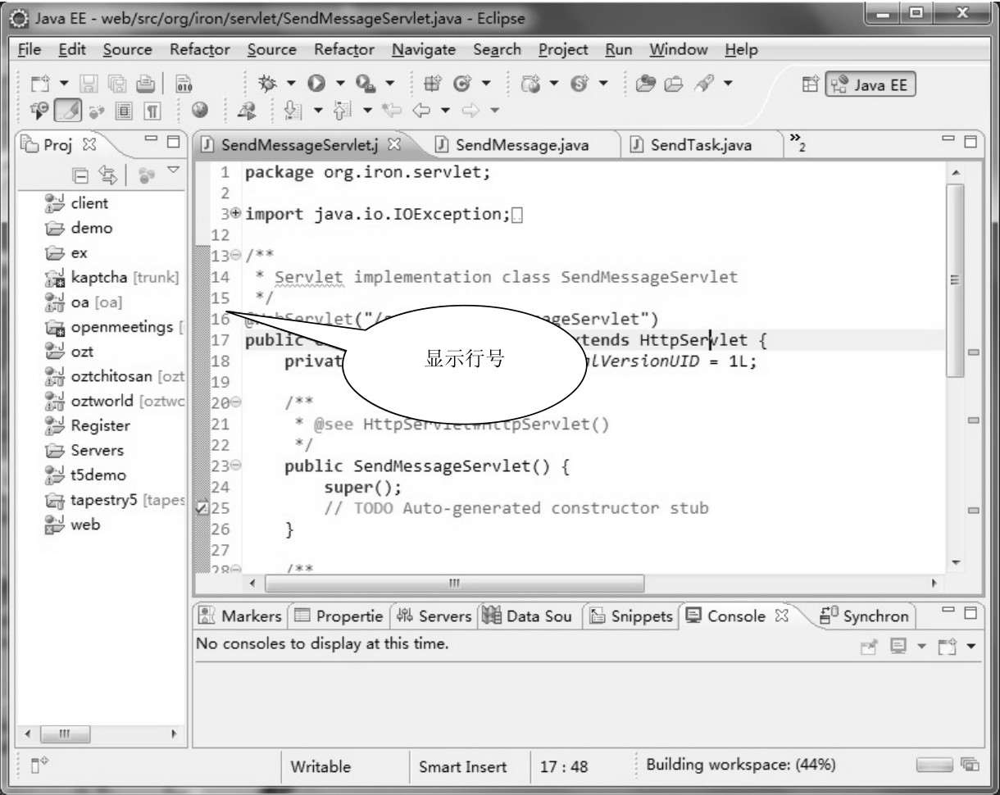
图9-11 Eclipse的编辑界面
在Shell中，有许多命令都可以输出行号，其中包括cat、grep及wc等。下面分别介绍如何使用这些命令输出行号。
cat命令提供了一个-n选项，通过该选项，cat命令会在每一个文本行的前面添加一个行号，如下所示。
从上面的输出结果可以得知，文件ex9-1.sh一共有10行。
与cat命令一样，grep命令也有一个名称为-n的选项，该选项使grep命令在输出结果的时候会显示符合指定筛选条件的文本行的行号。为了能够输出所有的文本行，用户可以使用空串作为grep命令的参数，如下所示。
在上面的输出结果中，每一行的前面都有行号，行号与文本行之间用冒号隔开。
除了前面介绍的几个命令之外，Shell还提供了一个名称为nl的命令，用来为文本添加行号，其基本语法如下：
nl命令的常用选项如下所列。
- -b：显示风格，可以取a、t及n等值，a表示为所有行添加行号，t表示仅仅为非空行添加行号，n表示不添加行号。
- -i：行号的增量，默认值为1。
- -v：行号的起始值，默认值为1。
参数file表示要添加行号的文件的列表。
【例9-30】演示使用nl命令为文本添加行号的方法，代码如下：
该程序的执行结果如下：
注意：如果不使用-b a选项，则nl命令只编号非空行。
9.4.2 统计行数
在Linux或者UNIX中，许多用户数据都是存储在文本文件中的。例如系统用户的信息存储在/etc/passwd及/etc/shadow等文件中。通常情况下，这些文件的每一行都是一条完整的记录，用来描述一件事物。因此，用户只要统计文件中文本的行数就可以知道文件中的记录数。
在Shell程序中，用户可以使用grep及wc等命令来统计文本行的数量。下面分别介绍这两种统计文本行数的方法。
grep命令提供了一个名称为-c的选项，用来统计符合筛选条件的文本行的行数，下面的例子就演示了这个选项的使用方法。
【例9-31】演示使用grep命令统计记录数，代码如下：
上面的程序类似于关系型数据库的查询操作。第6行通过read语句接收用户输入的数据，第11行通过grep命令查询含有用户输入数据的记录数，第12行输出统计结果。当用户输入字符e之后，程序终止运行。
该程序的执行结果如下：
wc命令是Shell中用来对文本进行各种统计的命令，其基本语法如下：
其中，wc命令常用的选项如下所列。
- -c：统计文本的字节数。
- -m：统计字符数。
- -l：统计行数。
- -L：统计最长行的长度。
- -w：统计单词数。
与其他命令一样，wc命令可以接受多个文件名作为参数，这些文件名之间用空格隔开。
如果想要统计某个文件的行数，可以使用以下命令：
上面的命令使用-l选项统计ex9-1.sh文件的行数，得到的结果为10行。同时，用户可以发现，如果直接使用wc -l命令统计文本的行数，会在输出行数的同时还包括被统计的文件的文件名。而在Shell程序，用户通常需要的仅仅是行数，这为用户带来了许多不便。下面为读者介绍一个小技巧，那就是去掉wc-l命令中的文件名，只得到行数。
【例9-32】演示通过-l选项来统计文本文件的行数，代码如下：
在上面代码的第5行，首先使用cat命令显示文件的内容，然后通过管道将结果输出给wc–l命令，并且将得到结果赋给变量lines。
该程序的执行结果如下：
除了直接统计文本的行数之外，wc命令还有许多其他的用法，在下面的例子中，我们通过find命令和wc命令，来统计查找到的文件数。
【例9-33】使用find结合wc命令来统计/etc目录下面以.conf为扩展名的文件的数量，代码如下：
在上面的代码中，第5行首先使用find命令查找/etc目录下面以.conf为扩展名的文件列表。我们知道，在find命令的输出结果中，每一行都是一个文件名。然后通过管道将这个列表输出到wc命令中，通常wc命令统计出搜索结果列表的行数。
该程序的执行结果如下：
以上结果表明，在/etc目录下面有411个文件以.conf为扩展名。
注意：通过cat等命令、管道，以及wc命令来获得文本行数是一个非常有用的技巧。
9.4.3 统计单词数和字符数
在许多语言中，例如英语，单词之间都是通过空格来隔开的。在wc命令中，也是通过空格来区分单词的。用户可以通过-w选项来统计文本中的单词的数量。另外，通过-m选项可以统计文本的字符数。
【例9-34】使用cat命令配合wc命令来取得文件中的单词的数量和字符数量，代码如下：
在上面的代码中，第5行使用cat命令显示文件内容，然后再使用wc –w命令统计单词数，这两者之间用管道连接起来。这样操作的目的同样也是为了取消wc命令输出结果中的文件名。第9行使用同样的方法获得文本的字符数。
该程序的输出结果如下：
注意：wc命令的执行结果会随着系统的区域设置不同而不同。
9.5 使用cut命令选取文本列
对于关系型数据库而言，用户可以在水平方向上选择行，也可以在垂直方向上选择列。与此相对应，针对文本文件，Shell也提供了相应的操作方法。前面介绍的排序和筛选都是以行为单位进行的，操作的结果也都是行。而cut命令则是从垂直方向上对文本进行操作。本节将介绍如何使用cut命令操作文本列。
9.5.1 cut命令及其语法
在进行文本处理的时候，经常会遇到选择某个文件的某些列的情况。例如，用户使用文本文件存储了一个电话本，包括姓名、性别、电话号码，以及家庭住址等信息。其中的每项信息都是作为一个列存在，所有的列组成一条完整的记录。现在用户需要从这个文件中选择姓名和电话号码这两个列，把其余的列排除掉。在这种情况下，就需要对文本文件从垂直方向上选取部分列。Shell中的cut命令就被设计成这样的功能。通过cut命令，用户可以从文本文件或者文本流中选择某些文本列。如图9-12所示，描述了cut命令的工作原理。
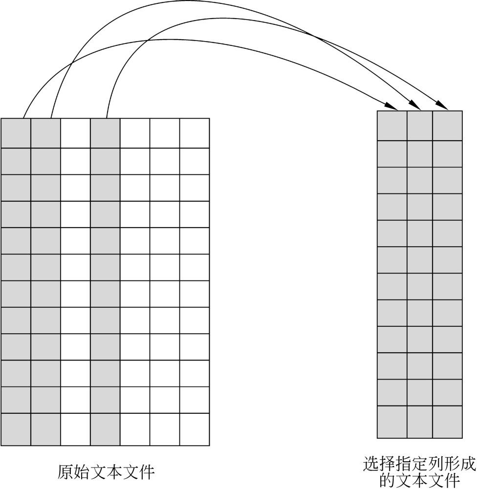
图9-12 cut命令的工作原理
cut命令的基本语法如下：
在上面的语法中，option表示选项，cut命令常用的选项如下所列。
- -b：只选择指定的字节。
- -c：只选择指定的字符。
- -d：自定义列分隔符，默认值为制表符。
- -f：只选择列表中指定的文本列，文本列用列号表示，多个列之间用逗号隔开。
- -n：取消分隔多字节字符。
- -s：不输出不包含列分隔符的行。
file参数表示要处理的文件列表，多个文件名之间用空格分隔。
9.5.2 选择指定的文本列
选取指定的文本列需要使用cut命令的-f选项，该选项接收一个文本列的列表，cut命令会从文本文件中选择列表中列出的列。
前面已经介绍过，在Linux系统中，许多文件都有固定格式的文本文件，例如/etc/passwd、/etc/shadow、/etc/group，以及各种日志文件等。这些文件有的以空格分隔各个列，有的以空格分隔各个列，还有的以冒号分隔各个列。
下面就以/etc/passwd文件为例，说明cut命令的使用方法。某个系统中passwd文件的内容如下：
在9.3.6节中，已经介绍过passwd文件的各个列的涵义。如果读者对该文件的格式不太清楚的话，可以参考9.3.6节中的内容。
【例9-35】演示如何通过cut命令从passwd文件中选择某些列，代码如下：
在上面的代码中，第5行使用-d选项指定列的分隔符为冒号，然后使用-f选项指定要选择的列为第1列和第6列。
该程序的执行结果如下：
在passwd文件中，第1列为用户的登录名，第6列为用户的主目录。因此，【例9-35】的功能是从passwd文件中选择当前系统中用户的登录名和主目录这两列数据。在上面的输出结果中，一共只输出了两列，但是这两列仍然以原来的分隔符分隔各个列。因此，cut命令的功能是从文本文件中抽取指定的列，但是并不影响文件的其他属性。
在-f选项中指定要选择的列的列表的时候，除了将所有需要的列罗列出来，并且用逗号隔开之外，还可以使用连字符表示一段连续的列号。例如，要选择第1～3列，可以将【例9-35】中的第5行修改为以下语句：
如果要选择从第3列开始，一直到文本行的结尾，则可以使用以下语句：
也就是说，省略连字符后面的终止列的列号。除此之外，还可以将逗号与连字符混合使用，如下所示。
上面的语句表示选择第1列，第2列和第4、5列。
9.5.3 选择指定数量的字符
除了从文本中选择列之外，用户还可以通过cut命令从每一行中选择指定数量的字符。在选择字符时，cut命令的语法如下：
其中，-c选项表示选择字符（character）。list参数表示要选择的范围，可以是以下语法形式：
在上面的语法中，第1行表示选择每行的第1～4个字符和第6个字符，第2行表示选择第3、5和8列，第3行表示选择第1～4列和第8列，第4行表示选择从第3列开始一直到行尾。
【例9-36】演示通过cut命令从文本文件中选择指定列的方法，代码如下：
在上面的代码中，第5行的语句表示选择每个文本行的第1～3列和第5列。
该程序的执行结果如下：
注意：由于选择字符是将整个文本行看做一个字符串进行的，所以不需要也不能指定列分隔符。
9.5.4 排除不包含列分隔符的行
在某些情况下，用户的数据文件可能会存在错误的数据行。这些错误的数据行在格式上与正确的数据行有所区别，例如不包含正确的列分隔符。cut命令的-s选项可以帮助用户排除掉这些不包含正确列分隔符的行。
为了演示排除不包含列分隔符的行的方法，我们在passwd文件的末尾追加一条记录，如下所示。
在上面的最后一行只包含一个单词user。
【例9-37】分别使用不含-s选项的cut命令和含有-s选项的cut命令来提取passwd文件的第1列，代码如下：
该程序的执行结果如下：
从上面的执行结果可以得知，当不使用-s选项时，cut命令会输出所有的文本行；在使用-s选项之后，cut命令只输出了被正确的列分隔符分隔的行。
注意：只要文本行中含有一个列分隔符，都会被含有-s选项的cut命令输出。
9.6 使用paste命令拼接文本列
在上一节中，我们介绍了cut命令，这个命令非常强大，可以从文本中选择某些列。有了这个命令之后，用户可能会反过来考虑，如果能够将多个文件的列合并起来，那岂不更好？Linux中的paste命令就是实现这个功能的，本节将介绍如何使用paste命令来处理文本文件。
9.6.1 paste命令及其语法
前面介绍的cut命令可以将文本文件纵向分隔，使得原来文件的某些列重新生成一个新的文件。paste命令的功能恰好与cut命令相反。该命令的主要功能是将某些文件的文本行并行地连接在一起，形成一个新的文件。新文件的列数等于参与组合的所有文件的列的总和，新文件的行数与参与组合的文件的行数相等。paste命令的工作原理如图9-13所示。
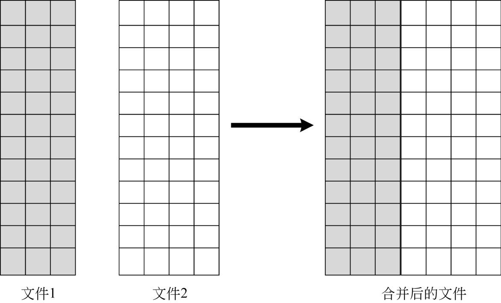
图9-13 paste命令的工作原理
在图9-13中，文件1包含3列，文件2包含4列，这两个文件都含有14行。合并以后的文件包含7列，其中前3列来自文件1，后4列来自文件2。合并后的文件同样含有14行。
paste命令的基本语法如下：
其中，paste命令常用的选项如下所列。
- -d：指定拼接结果中列分隔符。默认情况下paste命令生成的文件使用制表符分隔列。
- -s：将多个文件串行地拼接在一起，即将后面文件的内容追加到前面一个文件的后面。
其中，-s选项表示将各个文件依次连接在一起。也就是说，将后面一个文件的文本行追加在前面一个文件的内容的后面。因此，如果使用-s选项，则生成的文件的列数与参与组合的文件的列数相同，但是行数等于参与组合的所有文件的行数之和。
file参数表示参与拼接的文件列表，文件名之间用空格隔开。如果省略文件名，则表示从标准输入接收文本数据。
注意：从原理上看，paste命令非常类似于关系型数据库中的联接的概念，但是paste命令仅仅是简单地拼接列，并不涉及关键字的比较。而下一节将介绍的join命令基本等同于关系型数据库中的联接。
为了学习paste命令的使用方法，用户需要首先准备两个文件，其文件名分别为students.txt和phones.txt。其中，前者存储学生的学号和姓名，后者存储学生的学号和电话号码，如下：
【例9-38】通过paste命令和重定向将students.txt和phones.txt这两个文件拼接起来，代码如下：
在上面的代码中，第5行使用paste命令将students.txt和phones.txt这两个文件依次拼接在一起，并且使用制表符作为列分隔符，最后将拼接结果输出到名称为students.txt的文件中。
该程序的执行结果如下：
从上面的执行结果可以得知，以上两个文件的每一行都并行地拼接在一起，其中第1个文件的所有行成为新文件的第1、2列，第2个文件的所有行成为新文件的第3、4列。另外，paste命令是将两个文件的行按照它们在各自文件中出现的顺序进行拼接。由于students.txt文件的行数多于phones.txt文件的行数，所以在最后一行中，只出现了students.txt文件中的行所产生的前两列，而后面的两列为空白。
注意：paste命令并不要求参与拼接的文件中的文本行是有序的。另外，paste命令只是简单地进行文本行的拼接，并不进行任何关键字的比较。例如，在上面的拼接结果中，尽管students.txt文件中的第6行的学号为200200173，phones.txt文件的第6行的学号为200200179，但是paste命令仍然只是机械地将这两行拼接在一起。
9.6.2 自定义列分隔符
在默认情况下，paste命令会使用制表符作为新生成的文件的列分隔符。但是，用户可以使用-d选项来自定义所需要的分隔符，例如逗号或者分号等。
【例9-39】使用逗号作为paste命令拼接结果的列分隔符，代码如下：
该程序的执行结果如下：
9.6.3 拼接指定的文本列
paste命令并不直接支持只选择文件中的某些列来拼接。但是，用户可以通过间接的途径来使最后生成的文件中仅仅含有指定的列。在这里介绍两种方法，第一种就是先使用cut命令将需要的列从各个文件中提取出来，然后再使用paste命令进行拼接；第二种的顺序恰好相反，先使用paste命令进行拼接各个文件，然后再使用cut命令从生成的文件中提取所需要的列。由于第一种方法的执行效率相对较高，所以建议使用第一种方法来拼接指定的文本列。
【例9-40】通过cut命令和重定向将students.txt的第1列和phones.txt的第2列拼接起来，并且去掉其他列，代码如下：
在上面的代码中，第5行和第8行分别提取students.txt文件的第1列和phones.txt文件的第2列，各自生成一个临时文件。第11行将生成的两个临时文件再进行拼接。
该程序的执行结果如下：
【例9-41】先通过paste命令连接2个文件，然后再通过cut命令提取指定数据列，代码如下：
【例9-41】的执行结果与【例9-40】完全相同，请读者自行验证。
注意：由于paste命令只是简单地拼接文本行，所以如果用户需要将两个文件中某个关键字相同的行进行拼接的话，是不能完成的。在下一节中，我们将介绍如何使用join命令解决这个问题。
9.7 使用join命令联接文本列
在9.6节中我们介绍了paste命令，使用该命令，可以将多个文件的文本行进行拼接。同时，也提出了一个问题，那就是paste命令只能根据文本行的顺序进行拼接，而不能基于某个关键字进行联接。在Shell中，用户可以使用join命令来解决这个问题。本节将介绍join命令的使用方法。
9.7.1 join命令及其语法
join命令是一个非常有趣的Shell命令。对于熟悉关系型数据库的用户来说，一定会了解其中的数据表的联接的概念。所谓联接，就是根据用户指定的条件，将多个数据表的中的数据行联接起来，形成一个新的表，这个表的列由参与联接的多个表的列构成。
在Linux中，许多数据都是通过文本文件来存储的，而不是数据表的形式。与数据表的形式相似，这些文本文件也是由许多列构成，列与列之间由列分隔符隔开，常用的列分隔符有制表符、空格、逗号，以及分号等。
join命令就是用来联接这些文本文件中的数据行的，它是根据参与联接的两个文本文件的公共列来联接数据行。其基本语法如下：
在上面的语法中，option表示join命令的相关选项，常用的选项如下所列。
- -1 field：根据第1个文件的指定列进行联接。其中参数field用来指定第1个文件中用来联接的关键字列。
- -2：field：根据第2个文件的指定列进行联接。其中参数field用来指定第2个文件中用来联接的关键字列。
- -a filenum：指定是否输出不匹配的行。其中参数filenum可以取值为1或者2，分别代表参与联接的第1个文件和第2个文件。
- -e string：使用参数string指定的字符串代替空列。
- -i：在比较关键字时忽略大小写。
- -o：自定义输出列。
- -t：自定义列分隔符。
- -v filenum：该选项的功能是输出filenum指定文件的所有的行。
在上面的选项中，其中-a选项用来指定是否需要输出参与联接的两个文件中的不匹配的文本行，该选项可以取1或者2，当取值为1时，表示输出第1个文件中的所有的文本行，包括关键字不匹配的行；当取值为2时，表示输出第2个文件中的所有的文本行。该选项可以重复指定，例如想要同时输出两个文件中的所有的的行，可以指定-a1-a 2。
file1和file2代表参与联接的两个文本文件，与前面介绍的其他命令不同的是，join命令只能联接两个文件。如果需要联接两个以上的文件，则需要多次执行join命令。
最简单的join命令的使用方法就是不带任何选项，下面首先从最简单的join命令开始介绍。
【例9-42】演示最简单的join命令的使用方法，代码如下：
在上面的代码中，第5行使用join命令将students.txt和phones.txt文件联接起来并且输出到磁盘文件contactinfo.txt中。
该程序的执行结果如下：
用户可以对比【例9-38】和【例9-42】的输出结果。首先，paste命令输出两个文件中的所有的列，而默认情况下，join命令对于两个文件中共同的列只输出1次。其次，paste命令只是根据文本行在文件中出现的顺序进行拼接，并不考虑关键字列，因此，students.txt文件中的第6行和phones.txt文件中的第6行会拼接在一起。而join命令则会比较关键字列，只将关键字相同的行进行联接，因此，【例9-42】只输出了5行。除了上面介绍的两点不同之外，paste命令和join命令还有许多不同之处，将在后面的内容中介绍。
注意：在students.txt和phones.txt文件中，列分隔符为制表符，用户可以使用-t选项来指定输入文件，以及输出文件的列分隔符。
9.7.2 指定联接关键字列
在默认情况下，join命令会将两个文件的第1列作为关键字列进行比较。因此，在【例9-40】中，尽管用户并没有明确指定关键字列，但是join命令仍然将students.txt和phones.txt这两个文件的第1列作为关键字列进行比较。
但是，在实际情况中，作为关键字的列并不总是第1列。用户还可以使用-1或者-2选项分别用做关键字的列。其中，-1代表从第1个文件中指定关键字列，-2代表从第2个文件中指定关键字列。这两个选项都使用列号作为参数值。
新创建一个名称为scores.txt的文件文件，其内容如下：
其中，第1列为记录号，第2列为学号，第3列为分数。由于在scores.txt文件中，学号并不位于第1列，所以不能使用默认的join命令来联接students.txt和scores.txt这两个文件。下面介绍如何通过选项指定作为联接关键字的数据列。
【例9-43】使用-1和-2选项来指定关键字列，代码如下：
其中第5行通过-1选项指定文件students.txt的关键字列为第1列，通过-2指定文件phones.txt的关键字为第2列，然后将联接结果输出到studentsscores.txt文件中。
该程序的执行结果如下：
在上面的输出结果中，前面两列来自students.txt文件，后面两列来自于scores.txt文件。join命令将students.txt文件的第1列与scores.txt文件的第2列相同的行联接在一起。
注意：在默认情况下，join命令在比较关键字时会区分大小写，但是用户可以通过指定-i选项来忽略大小写的区分。
9.7.3 内联接文本文件
所谓内联接文本文件，实际上就是使用默认选项的join命令对两个文本文件的联接操作。在默认情况下，join命令只输出关键字匹配的文本行，而忽略关键字不匹配的文本行。如图9-14所示，描述了内联接的原理，在图9-14中，左边的圆代表第1个文件的行，右边的圆代表第2个文件的行，中间的阴影代表内联接的结果，表示只有关键字匹配的文本行才会出现在结果中。
例如，在students.txt文件中存在着200200173和200200187这两个关键字，在phones.txt文件中存在着200200179关键字，这3个关键字没有匹配成功，所以这3行全部都被忽略。
关于内联接文本文件的例子请参照【例9-40】，不再举例说明。
注意：参与联接的两个文件必须按照关键字排序，否则会出现错误。但是用户可以通过指定--nocheck-order选项来使join命令不检查文件是否按照关键字排序。
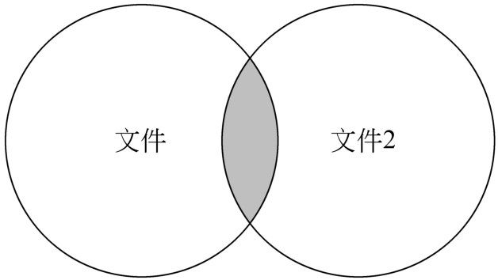
图9-14 内联接文本文件
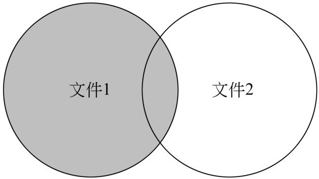
图9-15 左联接文本文件
9.7.4 左联接文本文件
所谓左联接，是指在联接结果中输出左边文件的所有行，即使在右边的文件中没有匹配的行。在左联接中，对于在右边的文件中没有相应关键字的行，由右边文件所形成的列使用空白符填充。如图9-15所示，描述了左联接文本文件的原理，在图9-15中，左右两个圆分别代表参与联接的两个文件，阴影部分代表左联接的结果，从图中可以看出，左边文件的所有行都包含在输出结果中。
在join命令中，要实现左联接，可以使用以下语法：
其中，选项-a1表示显示第1个文件的所有的行，无论是否匹配成功。
【例9-44】演示通过join命令左联接文件的方法，代码如下：
在上面的代码中，第5行的join命令使用了-a 1选项，表示列出student.txt文件的所有的行。
程序的执行结果如下：
从上面的执行结果可以得知，students.txt文件中的所有的7行全部被输出，其中第6、7行在phones.txt文件中没有相应的学号，所以这2行的第3列为空白。
9.7.5 右联接文本文件
右联接的原理与左联接恰好相反，它是将右边文件的所有的行全部显示出来，而在匹配不成功的行中，由左边文件形成的列使用空白填充。如图9-16所示，描述了右联接的原理，图中的阴影部分代表右联接的结果。通过图9-16可以看出，右联接的结果中包含了文件2的所有行，而对于文件1来说，仅仅包含了匹配成功的行。
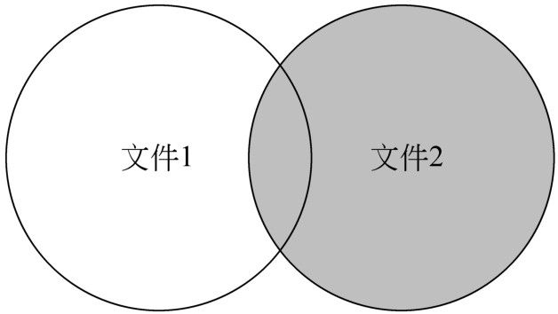
图9-16 右联接文本文件
右联接文本文件的语法如下：
其中，-a2表示输出第2个文件的所有的行。
【例9-45】演示通过join命令右联接文本文件的方法，代码如下：
在上面的代码中，第5行的join命令使用了-a 2选项，表示输出第2个文件的所有的行。
该程序的执行结果如下：
由于最后1行在phones.txt中只有学号和电话号码，而在students.txt文件中没有姓名，所以第2列为空白。
9.7.6 全联接文本文件
所谓全联接，是指除了显示两个文件中关键字匹配成功的行之外，还包括前后两个文件中所有不匹配的行。同样，对于第1个文件中的关键字匹配不成功的行，由第2个文件形成的列通过空白填充；反之，对于第2个文件中的关键字匹配不成功的行，由第1个文件形成的列也通过空白填充。如图9-17所示，描述了全联接的原理，图中阴影代表全联接的结果，可以看出全联接的结果中包含了两个文件中的所有的行。
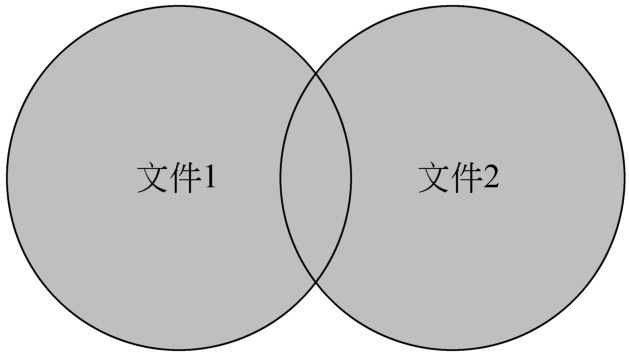
图9-17 全联接文本文件
全联接文本文件的语法如下：
在上面的语法中，同时使用了-a1和-a2这两个选项，表示输出第1个和第2个文件的所有的行。
【例9-46】演示使用join命令通过全联接来联接两个文本文件的方法，代码如下：
该程序的执行结果如下：
注意：在进行全联接时，选项-a1-a2不能写在一个-a选项中，只能重复使用两个-a选项。
9.7.7 自定义输出列
在默认情况下，join命令会输出参与联接的两个文件的所有的列。但是，在某些情况下，用户可能并不需要得到所有的列，就可以使用-o选项来指定要输出的列的清单。-o选项可以接受一个字段的列表，其语法如下：
其中，filenum表示文件号，可以取值为1或者2，分别代表第1个和第2个文件。field代表要输出的列的列号，为一个十进制数字。文件号和列号之间用圆点连接起来，组成一个整体，代表某个文件的第几列。如果同时指定了多个列，则多个列之间用空格隔开。
另外，用户可以直接为-o选项指定参数值0，表示仅仅输出关键字列。
【例9-47】演示使用join命令的-o选项自定义输出列的方法，代码如下：
在上面代码的第5行，指定输出的列包括第1个文件的第1、2列和第2个文件的第3列。
该文件的执行结果如下：
从上面的执行结果可以得知，scores.txt文件中的记录号已经被省略了。
9.8 使用tr命令替换文件内容
在Shell提供的文本处理工具中，还有一种非常实用的工具，其功能是用来批量替换文本中的字符。其中最主要的命令就是tr，本节将介绍tr命令的使用方法。
9.8.1 tr命令及其语法
tr是单词translate的前面两个字母，其功能是转换或者删除指定的字符。与其他的文本处理命令不同，tr命令不能直接从文件中读取数据，只能从标准输入获取数据，并且将处理结果写到标准输出设备。
tr命令的基本语法如下：
在上面的语法中，option表示tr命令的选项，常用的选项如下所列。
- -c：用字符集set2替换字符集set1中没有包含的字符。
- -d：删除字符集set1中的所有字符，不执行替换操作。
- -s：压缩set1中重复的字符。
- -t：将字符集set1用set2转换。
参数set1和set2分别表示参与操作的两个字符集，其中set1用于查询，set2用于处理各种转换操作。也就是说，凡是在字符集set1中出现的字符，都将被替换为字符集set2中相应位置上的字符。
tr命令中的字符集使用类似于正则表达式的形式来表达，常用的语法形式如下所列。
- [a-z]：所有的小写字母。
- [A-Z]：所有的大写字母。
- [0-9]：单个数字。
- /octal：一个三位的八进制数，对应有效的ASCII字符。
- [char*n]：表示字符char重复出现指定次数n。
另外，tr命令还支持字符类，常用的字符类如下所列。
- [:alnum:]：所有字母字符与数字。
- [:alpha:]：所有字母字符。
- [:blank:]：所有水平空格。
- [:cntrl:]：所有控制字符。
- [:digit:]：所有数字。
- [:graph:]：所有可打印的字符，不包含空格符。
- [:lower:]：所有小写字母。
- [:print:]：所有可打印的字符，包含空格。
- [:punct:]：所有标点字符。
- [:space:]：所有水平与垂直空格符。
- [:upper:]：所有大写字母。
- [:xdigit:]：所有十六进位制的数字。
9.8.2 去除重复出现的字符
使用tr命令，可以快速地将文本中连续出现多个相同的字符压缩为一个字符。例如在下面的demo9.txt文件中，就存在着许多由于输入错误导致的重复字符：
对于上面的语法错误，人工删除非常麻烦，下面介绍如何通过tr命令去掉连续的重复字符。
【例9-48】使用tr命令删除多余的重复字符，代码如下：
在上面的代码中，由于tr命令不直接接受文件作为参数，所以第5行使用了输入重定向将文本文件demo9.txt的内容输入到tr命令。当然，为了解决这个问题，也可以使用其他的文本显示命令配合管道来完成。tr命令中使用了-s选项，表示压缩重复字符。由于在demo9.txt文件中出现重复的字符都是小写字母，所以使用[a-z]表示要处理的字符集。
该程序的执行结果如下：
从上面的输出结果可以得知，多余的字符已经被全部删除。
9.8.3 删除空行
有的文本中，会存在许多空行。所谓空行，是指只含有换行符，除此之外不含有任何其他字符的行。
在下面的demo9.txt文件中，除了两行文本之外，其他所有的行都是空行，如下所示。
【例9-49】使用tr命令快速删除demo9.txt文件中多余的空行，代码如下：
其中第5行使用cat命令来显示文件内容，然后通过管道将结果输出到tr命令。在tr命令中，由于空行只含有换行符，所以可以使用\n表示空行。
该程序的执行结果如下：
注意：换行符也可以使用八进制数值\012表示，因此，【例9-49】中的第5行可以修改为：
9.8.4 大小写转换
在前面的例子中，实际上只为tr命令提供了一个字符集。当使用tr进行大小写转换时，需要同时提供两个字符集。前者是目标字符集，后者是用来替换的字符集，其语法如下：
在使用以上命令时，出现在输入文本中的字符集[a-z]中的小写字母将被字符集[A-Z]中相应位置的大写字母代替。
【例9-50】使用tr命令将当前目录中的所有文件的文件名转为大写，代码如下：
在上面的代码中，第5～7行使用for循环对当前目录中的每个文件名进行转换。从第5行可以看出，字符集也可以使用'a-z'及'A-Z'等语法表示。
该程序的执行结果如下：
注意：如果想要将大写转为小写，只要将两个字符集颠倒就可以了。
9.8.5 删除指定字符
使用tr命令可以快速地删除文本中出现的某些字符，这在某些情况下非常有效。当用户使用tr命令删除指定字符时，需要使用-d选项。
例如，用户有一个内容如下的文件demo11.txt：
现在用户想要把其中的时间字符去掉。通过观察发现，实际上时间字符是由数字和冒号组成的。所以，用户可以通过tr命令来删除这些字符。
【例9-51】使用tr命令删除demo11.txt文件中的时间列，代码如下：
在上面的代码中，第5行使用含有-d选项的tr命令来删除字符集中指定的字符。其中字符集为0-9和冒号。
该程序的执行结果如下：
注意：在使用tr命令时，注意字符集表示一个个单独的字符，而非字符串。因此，tr-d"[Hello]表示的是文本中出现的5个字符，而非Helloh这个字符串。
除了上面使用-d选项之外，用户还可以使用其他间接的方法来删除文本中的字符，如下面的例子所示。
【例9-52】通过补集的方式来删除指定的字符，代码如下：
在上面的代码中，第5行通过-c选项，使得tr命令用空行来代替文本中不在[a-z][A-Z]中出现的字符。由于在demo11.txt中，所有用户需要的字符都是大写字母或者小写字母，而需要删除的字符都是非字母字符，所以第5行的语句首先将demo11.txt中的非字母字符替换为换行符，然后再通过-s选项压缩文本中的重复字符，从而最终达到删除时间字符的目的。
【例9-52】的执行结果与【例9-51】完全相同，请读者自行执行并验证。
9.9 小结
本章详细介绍了Shell程序中处理文本的各种命令及其使用方法，主要包括使用echo命令输出文本、文本的格式化输出、使用sort命令对文本进行排序、文本的统计、使用cut命令选取文本列、使用paste命令拼接文本列、使用join命令联接文本列，以及使用tr命令替换文本内容等。重点在于掌握文本处理命令的基本用法。在下一章中，将介绍流编辑命令sed的使用方法。
Table of contents
- 内容简介
- 前言
- 目录
- 第1篇 认识Shell编程
-
第2篇 Shell编程基础
- 第3章 变量和引用
- 第4章 条件测试和判断语句
- 第5章 循 环 结 构
- 第6章 函数
- 第7章 数组
- 第8章 正则表达式
- 第9章 基本文本处理
- 第10章 流 编 辑
- 第11章 文本处理利器awk命令
- 第12章 文件的操作
- 第13章 子Shell与进程处理
- 第3篇 Shell编程实战
- 附录CD